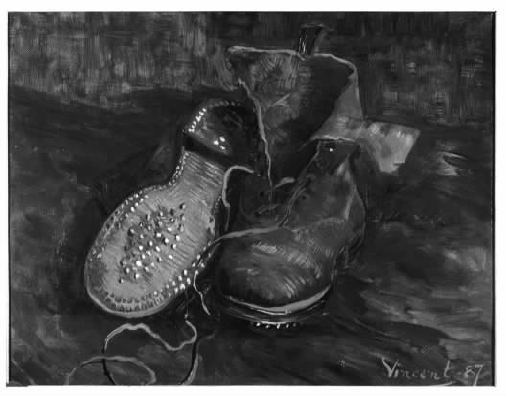
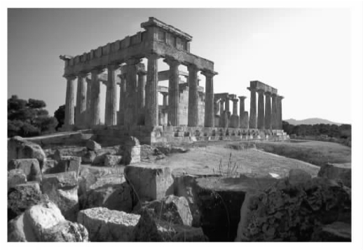

20世纪30年代中期之前，海德格尔对于艺术并未表现出多大兴趣，而之后他对于艺术的兴趣则与其他几个关联兴趣相伴产生：前苏格拉底哲学家，他们的作品通常为诗歌形式，同希腊诗歌的关系比（比方说）康德同德国诗歌的关系更为紧密；诸如谢林与尼采这样的哲学家，对于他们来说艺术在哲学中居于中心地位；语言，对于海德格尔来说是与诗人相伴而生的。
海德格尔关于艺术的一般性论著——《艺术作品的本源》于1950年出版，不过其来源为1935年所作的系列演讲。他反对两个被广泛接受的学说。其一为艺术只与美丽和愉悦有关：“毋宁称艺术为对存在物之存在的揭蔽。”（《形而上学导论》，111）其二为一件艺术作品首先是一件物品，审美价值是通过我们对其主观看法而附加其上的：对于海德格尔来说，是艺术向我们展示了一件物品究竟为何物。然而，艺术作品以两种方式成其为物品。首先，一件作品，如一幅画作，能像其他东西一样被搬运和储藏。（后来他放弃了这种看待艺术作品的方式。这种方式将艺术作品作为现成在手的物体来对待，和艺术品商以及搬运工对待艺术作品的方式一样。）其次，它具有物因素：“建筑作品中有石料，木雕作品中有木材，绘画作品中有色彩，语言作品中有言说，音乐作品中有声响。”（《艺术作品的本源》，19）
那么，物品是什么？有三种传统解释：一件物品是（1）属性承载者；（2）感官的集合；或（3）形式与质料的合成物。海德格尔拒绝了（1）和（2），拒绝（2）的原因是“我们从未真正首先觉察到感觉的拥塞……我们在屋里听见关门声，却没有听到听觉的感觉甚或纯然的声音”（《艺术作品的本源》，26）。他偏向（3），即形式－质料的解释。这本来源自、同时也最适用于本质有用的器具如罐子或鞋具。然而器具只是三种物体中的一种：一种“纯然物”，诸如岩石、器具和艺术作品。艺术作品不同于器具，它与纯然物具有共同点。像花岗岩而不像鞋，艺术作品并非为特定用途或目的而生产，虽然不像岩石和鞋它没有“自身构形特性”（《艺术作品的本源》，29）：它呼唤着观察者或解释者。然而，既然传统给予器具以优先权，海德格尔决定首先考察它。
海德格尔这样做是通过引入他的首个例子：凡·高关于一双孤零零的破旧农鞋的画作。我们不能仅仅看自己所穿的鞋，因为关注扭曲了我们对鞋的看法：对于其穿着者来说，鞋本来并不显眼。海德格尔声称，我们从画作中看出鞋同时与世界——人类产品与活动的世界——以及大地——世界所栖身的自然基础——相联系。这一点既 被一般使用者，也 被形式－质料理论忽略了。由于对鞋极度熟悉，使用者简单将其视做用来行走之物。或者（另举一例）对板球拍熟悉的人将其视为一块打球的木板。形式－质料理论精炼了这种解释。这一理论将焦点集中于鞋具和球拍的制造 ，认为它们是质料（皮革、钉子、木材）被赋予了形式（有用性）。使用者与该理论忽视了需要向未知情的外人解释的其他许多东西：鞋与农民的世界的关系，以及它们在大地上所遭受的磨损；球拍与板球世界（门柱、球手，等等）的关系，以及为它提供支点的大地。但是这些被忽视之处在画作中变得明显了：“通过这幅作品，器具的器具性才初步展现其真相……由此可见，艺术的本质应该是：存在者的真理自行设置入作品。”（《艺术作品的本源》，36）作品并非附加艺术属性的物品：作品揭示了物品的本质。

图8文森特·凡·高画作：《农夫的鞋》
海德格尔现在提供了第二个例子：希腊神庙。他这样做部分是为了区分其自身观点与认为艺术是模仿的观点：神庙不具有代表性。但部分也是因为他想要声称：一件艺术作品不仅仅敞开一个世界，它也树立一个世界，一个其所属的世界。凡·高的作品敞开了农民的世界，然而它并未树立这个世界，它也并不属于这个世界。与此相反，神庙统一并阐明了一个民族所构成的世界：它“首先嵌合了那些途径与联系的统一体并将其聚拢到身边，在这些途径与联系中，出生与死亡、祸患与福祉、胜利与耻辱、忍耐与没落获得了人类天命的形态”（《艺术作品的本源》，42）。一个民族的世界是熟悉的结构的领域，在其中他们知道自己的道路，作出自己的抉择。
神庙不仅仅是树立 世界。它还建立 世界的相对物：大地。它被“大地的”自然所包围，被风暴抖震，停留在岩石之上，它也包括大地自然物。它由此揭示出作为大地的大地，在大地上建起一个世界。所有的艺术作品以自己的方式建立大地。在器具中，大地的原材料是被“耗尽”的，即融合到人造物品之中因而不再显明：鞋具是皮革还是等效材料制成的，这无关紧要，我们也没有注意到。在艺术作品中，材料只是被“使用”，而非“耗尽”：它们在作品中仍然鲜明（《艺术作品的本源》，47及下页）。与普通文本不同，诗歌的大地质料，即诗歌语言，鲜明且拒绝被改写。帕台农神庙是由大理石还是塑料建成，这是有区别的。无论如何，所有的艺术作品都建立大地。
世界是我们生存的人化环境：我们所使用的工具，居住的房屋，调用的价值。大地是这个世界的自然背景，即它所栖身的土壤以及我们的人造物品的原材料的来源。世界与大地是争执的对立。世界努力寻求明确与开放，而大地耽于隐匿与遮蔽，倾向于把世界纳入其中。二者相互需要，相辅相成。艺术作品同时凌驾于二者之上。神庙的宁静是大地与世界相对立的产物。它是事件，是大事——真相作为无蔽的大事。只有当存在物无蔽时我们才能作出具体的推测以及决定。但我们这些有尽的生物无论认知上还是实践上都从未完全掌控过存在物，因此还是存在遮蔽。若无遮蔽，就没有客观性，没有决定，也没有历史：所有一切——曾在、当前、将来，将对我们完全透明，对事物不留下隐藏的深度，也没有结果不定的选择。（两对相反的概念，大地——世界与遮蔽——无蔽，并不完全吻合。大地部分遮蔽，世界也部分遮蔽。）真相发生于作品之中：“作品树立一个世界并建立大地，是一种争执，作为整体存在的无蔽或者真理赢得了这种争执。”（《艺术作品的本源》，55）

图9爱琴那岛的爱法伊娥神庙，建于公元前500年
海德格尔贬低艺术家的作用，倾向于将作品视为非人力的产物——诸如真理或艺术本身，这种力量利用艺术家来自我实现。在“伟大的艺术”中艺术家抹去自身：他像“在创造过程中自我毁灭以使作品呈现的通道”（《艺术作品的本源》，40）。但是艺术作品本质上是“创造出来”的（《艺术作品的本源》，56及下页）。创造与工具制造截然不同：艺术并非手艺加上一些别的东西，作品也并非工具加上一些别的东西。
为何真理必须蕴含于作品之中呢？遮蔽与无蔽的斗争是旧范式与新范式之间的斗争，一如传统教义与新教之间的斗争。艺术作品就像堡垒或标准，标志着刚刚赢得的真理的阵地：“敞开的澄明（Lichtung）与公开的设立是紧密相关联的。”（《艺术作品的本源》，61）海德格尔承认（《艺术作品的本源》，62）存在其他坚持要求真理的方法：一个“创立了政治国家的法案”（如美国宪法）；“临近不是简单的存在，而是最普遍的存在”（如圣保罗的皈依）；必要的牺牲（如耶稣被钉十字架）；或思考者的质问。（科学并非“真理的最初事件”。它填补了“已经敞开的真理领域的细节……只要一门科学超越了正确性继续向着真理迈进……它就成了哲学”。）而艺术是真理发生的主要方式。不仅是神庙，还有希腊悲剧也拟定了范式、价值观与种类，一个民族以这种方式看待世界，作出抉择。
为何艺术作品必须被创造？一件作品涉及大地与世界之间的一道“裂隙”，并且（不同于器具）创造出形式平静的鲜明的大地材质。裂隙的概念，Riss，联系着基础的计划或范式，即Grundriss（《艺术作品的本源》，64）。但这也意味着由于其包含的张力，一件作品是鲜明的。扫帚融入其他器具的背景之中，它的构成材料被“耗尽”，消融为其有用性。一件作品是孤独的、有张力的、显著的，尤其适合作为真理的标志。然而作品的存在本身强烈呼唤阐释。与工具不同，作品承载着生产时的伤痕。裂隙需要创造者来包容它。
一件作品除了创造者之外，还需要观众或“保存者”。作品将保存者从“普通领域中拉出来”来到其敞开的新世界，并且暂停其“通常的做法与衡量标准、了解与看待方式”（《艺术作品的本源》，66）。对于一件作品的合适反应既非了解也非意愿，而是“保持着意愿的了解与保持着了解的意愿”（《艺术作品的本源》，67）。并不是因为执行一个预设的计划，而是“决断”，使绽出态进入一个新的开放领域，在其中人们所有的旧观念与欲望都被暂停。它有点儿像圣保罗的皈依，展开一个认知与意愿的新世界，与人们此前的概念和计划相分离。伟大的艺术作品，如同上帝的声音，不是以消费者为导向的：它改变了人们看待世界的整体方式以及在其中寻找道路的方式。然而作品并非药品，经历也非私有：作品是公有的，同时为我们相互之间的联系打下根基。
海德格尔说过，一件作品不是附加一些东西的物品或工具；物品与材料在器具中并不显明，只在作品中反映出来。那么艺术家又如何呢？在他创造艺术之前，难道不需要了解自然，了解他所描绘的物品与工具吗？不需要。正是作品使裂隙（Riss）充分发挥并绘出草图（Riss）（《艺术作品的本源》，70）。艺术家并不是先 对事物有了一个明确的认识，然后 才将其在作品之中具体化的：自然只有在作品中对他，也对我们敞开。作品需要创造者“将真理设置入作品”，还需要保存者在他们公共的了解－意愿中“使其发挥作用”，实现它（《艺术作品的本源》，71）。但作品同样使创造者与保存者成为可能 。创造者是比他们本身更大的力量——艺术——的代理。
在某种意义上，真理来自虚无。我们不能在阐释凡·高的画作时假设他碰巧看到了一些旧鞋，于是将所见画下来。因为，首先，单独鞋子并不能说明凡·高看见它们的方式。其次，在凡·高绘画之前 ，他并没有以一种新的方式去看待鞋：“敞开领域的敞开，以及存在的澄明，只有当敞开被筹划时才发生。”（《艺术作品的本源》，71）艺术与圣保罗的皈依一样属于意外事件。
因而，一切艺术本质上都是诗（Dichtung）（《艺术作品的本源》，72）。此处，Dichtung 意义很广，指代类似“发明”或“筹划”之物。艺术家投入作品中的东西不来源于其周围的事物而来源于发明或筹划之物。所有伟大的艺术都包含了“存在之揭蔽状态……的变化”（《艺术作品的本源》，72）：它阐释普通的事物；它将我们从普通世界中暂时拉开，来到另一世界；或者说它改变了我们的整体世界观。不过，狭义上说，Dichtung意为“诗歌”（Poesio），而诗歌是海德格尔的第三个例子。他并不相信所有其他艺术都是诗歌或都源于诗歌。他的信念如此：语言绝不仅仅是传递知识的媒介。这种功用的语言是“任何时候的实际语言”。语言还通过首次为事物命名将其带出“模糊的混乱”进入公开状态，从而给我们可供交流的东西。这是创造性语言或“筹划性言语”（《艺术作品的本源》，74）。它拟定交流语言中能说与不能说之物。既然诗歌在语言当中，又是艺术形式的一种，即真理的光辉投射，诗歌就必须是筹划性言语，一种创造性的、创新的语言运用以命名事物，从而敞开一个领域，在其中我们得以交流。
但是，诗歌并非仅仅是几种艺术中的一种。其他的艺术——建筑、雕塑、绘画、音乐——在语言已经敞开的领域里运作。被语言，即被诗歌所影响的揭蔽在其他艺术所影响的揭蔽之前。因而诗歌比其他艺术形式要早，就像语言学揭蔽比其他形式的揭蔽要早一样。
所有的艺术都是诗意创造（dichterisch），或是发明或是筹划。作品的保存同样如此，因为保存者必须进入作品解蔽的领域中去。然而，海德格尔继续论述，诗（Dichtung）的精髓是真理的建构。“建构”，即Stiftung，具有三种意义，而艺术包含了建构的全部三种意义。第一，“赠予”。真理作品的背景包含了范式的转换：它将非凡捧上高处，又将庸常推入低谷。因而真理无法从曾在之事中产生。它作为一件礼物 而诞生。建构是“溢出”，是礼物的赠予。（《艺术作品的本源》，75）
第二，建构是“建立”。真理不是投射到虚空，而是投射于保存者，历史的人类。它源自虚空，却面向一个民族。一个民族涉及三个因素。其一为该民族的“天赋”，他们的“大地”：他们所生存以及耕植的土壤，同时还有其世界中相对而言永久性的特征，例如他们所说的德语。其二为普通而传统的一面，旧“世界”，比如他们的异教徒习俗与信仰。其三为新“世界”，他们的“保留职业”，例如在他们当中基督教的开始。（《艺术作品的本源》，75L）创造物如基督教艺术作品无法由这些因素来解释，尤其无法由旧世界来解释。然而它是由这些因素所引导的。它由德语创作，根据天赋作出调整，提供了一条基督教信息。它使得该民族的天命明确，并在该民族本土的土壤上建立它。
第三，建构是“开始”。开始在某种方式上是直接或即时的，却也可能需要长久的准备——如我们需要准备才能跳或跃（Sprung）。一个真正的开始并不简单或原始；它包含自身内部潜在的终结；它是一种领先（Vorsprung），跳跃过即将到来的一切。（《艺术作品的本源》，76）比如，荷马史诗既不原始也不简单；其中暗含了悲剧，这些悲剧后来敞开希腊城邦的世界。艺术史并非稳定的积累过程，而是被许多创造性能量的爆发所打断，后代便借助于这些能量的碎片来尽可能地做事。
“当作为整体的存在物需要建立在敞开状态下时，艺术总是作为建构进入其历史本质之中。”（《艺术作品的本源》，75）这样的艺术改变了我们的整体存在观。在西方这种情况出现过三次。第一次，也是最激烈的，发生在希腊，其存在的概念为“在场”（Anwesenheit）。随后在中世纪，由希腊人揭蔽的存在被转换为上帝创造之物。最后一次发生在现代，存在物成为“对象”，被计算与操纵。（这就是蕴含于“技术”根基中的东西。）每一次都有一个新世界诞生；存在物的无蔽发生；并且它自行设置入作品，即由艺术获得的背景。当艺术发生时，一个推力进入历史，历史重新开始。艺术建起一个历史，并非重大事件意义上的历史，而是作为人类进入其本土天赋及其向指定的天命方向运动之过程的历史。现在我们理解了文章标题中的“本源”一词。“本源”，Ursprung，意即“领先”（《艺术作品的本源》，77L）。艺术使真理领先。艺术是艺术作品的本源或领先。因此它是作品创造者与保存者的起源，是一个历史族群的存在方式。
与《存在与时间》一样，这部作品以讨论黑格尔结束（《艺术作品的本源》，79—81）。海德格尔问：艺术是否仍然是必要和必需的方式，通过这样的方式，对于我们的历史性存在起决定性作用的真理发生？黑格尔回答说不是的。然而黑格尔的答案是在一个已经发生的存在的真理的框架中被给出，这一真理自从希腊人以来就为西方思想启蒙。如果黑格尔的宣称曾经唤上前来要求决定，这一决定将牵涉一个迥然不同的真理概念。目前我们太过纠缠于旧概念以衡量黑格尔的宣称。我们所能做的一切就是继续就艺术进行思考。这不能迫使艺术变为存在，但这是其准备：“唯有这种知道才为艺术准备了一个空间，为创造者准备了一条道路，为保存者准备了一个地点。”（《艺术作品的本源》，78）海德格尔自况为即将到来的新艺术以及新世界的施洗者约翰。
海德格尔用“转向”（Kehre）一词指代两件事物：从《存在与时间》第一、二篇涉及的对此在的分析方面转向第三篇关于存在与时间；以及从存在的健忘转向他所希望到来的存在的记忆。人们则经常用“转向”来指代海德格尔自身思想的变化，这一变化被认为发生于1930年左右。我们在这第三种含义上能否探测到转向的标记？在《存在与时间》与《艺术作品的本源》之间海德格尔改变主张了吗？
这两部著作之间有很多的承继性。海德格尔仍然关心此在与其世界，然而兴趣的焦点转移了。《存在与时间》在一个已设立的世界里面关心此在的本性。《艺术作品的本源》提出一个不同的问题：一个世界首先是如何建立起来的？海德格尔通过一系列基础性愈来愈强的艺术作品来接近这个问题。首先，是一幅凡·高的作品，对我们揭示出一个已经就位的世界。其次，是一座神庙，通常是最重要的，充当着城邦的结构中心。在此他也提到了悲剧，它们源自一座特别的城邦，虽然也往往在其他城市中上演。最后，虽然是暗示性地，是荷马与赫西奥德的泛希腊的诗歌，它们被认为是希腊世界的公共财富。
海德格尔无疑夸张了。艺术对于世界建构总是如此重要吗，像它可能对于希腊人的重要性那样？基督教世界是由艺术树立的还是仅仅由艺术宣告诞生（或建立）的呢？器具——第一辆汽车或者协和飞机——难道不能像一件艺术品一样有效地树立一个世界吗？是否所有最重要的、建构世界的纪念物（如特拉法尔加广场）都是伟大的艺术品呢？但是这些问题都是次要的。要点是此在在一个世界的建构中不能起关键作用。它并不能像在《存在与时间》前两篇中一样占据舞台的中心位置。
此在本来便在世间。普通的人类发现、交流、决定以及活动预设了一个价值与范畴、风俗与习惯的熟悉背景。这个世界是如何设立的？就此而论它能如何被激烈地改变？不是由普通此在改变的，因为此在总是已经存在于世界中。那么是由非凡此在改变的吗？艺术家、诗人，甚或思想家？追随荷尔德林的海德格尔有时把诗人描述为一种半神，站立于一个神与人之间的无人之境，把神的暗示传递给人。正是在这一无人之境中，人是谁以及他在何处设立自己的存在被决定下来（《荷尔德林与诗的本质》）。
艺术家或诗人无法以任何一种常人的方式完成其工作，即以任何一种已经预设其将要树立的世界的方式。他必须成为一种类似非人类力量的手段的东西——艺术或真理或存在本身。艺术家必须是“决断的”（entschlossen），向这种力量绽出性地“敞开”。决断起初似乎是一种在这个世界里本真地引领自我的方式，现在已经找到了一个新角色：决断使得创造者与保存者得以建构一个新世界。
语言也同样找到了一个新角色。在《存在与时间》中，语言从已经设立的世界的意指性关联中成长。在《艺术作品的本源》中它具有更加基础性的地位。作者对事物的首次命名，投射性语言帮助建构起一个世界。语言同样不能由人类按照常人的方式设计，那样的方式已经预设了我们对语言的拥有。因此语言，至少筹划性语言，也是组成此在及其世界的非人类力量，而不仅仅是交流工具。这就是为什么海德格尔说：“说话者并非人，而是语言。人只有当命运使然而回答语言时才说话。”（《理性的原则》，96）
海德格尔的思想转变了吗？或者只是他的问题变化了吗？或者新问题只是从早期问题中发展出来的吗？也许我们应该专注于他关于“原初”所说的话。他说，真正的原初既不简单也不原始，它跳跃过了即将到来的事情。对于他自己的早期作品可能如此吗？例如，《艺术作品的本源》将大地作为世界的相对物。与此相反，《存在与时间》并未提及“大地”。然而在1925年的演讲中，海德格尔已经将“大地”表述为我们的作品及活动的世界所栖身之处（xx.269－270）。大地还不像在《艺术作品的本源》里面的那样与世界相对立。它是我们的世界中为人熟知的偏远部分，是半驯化的自然，我们在此放牧牛群。它不像《艺术作品的本源》里面的那样，充满威胁、敌意（虽然不可或缺），必须费尽心力才能从中夺出一个世界。但是，这是因为在这两部著作中所提出的问题是不同的。大地的概念在海德格尔早期著作中仍不明显，然而已为其后来具有更加重要的地位作了铺垫。早期的海德格尔也许是荷马史诗式的，晚期的海德格尔正是从中发展了悲剧与神庙。